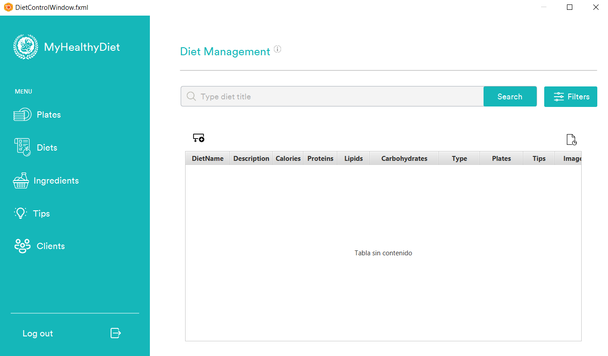

Diet Management: Help
General Description
This window is used to perform basic maintenance operations on the diet data. The administrator can use the controls available in the window to create, modify and delete the diets from the application. He can also generate a report containing a list of the diets with their corresponding data.
Operations
Open windowsTo open the windows, click on the corresponding button in the application's side menu.
Create DietsTo create a new diet, click on the icon above the table on the left side in the main window.
Update DietsTo update an existing diet, double click on the cell to edit in the table. Fill the fields and press the ENTER key to save the changes. If you want to cancel the update, just type the ESC key.
Delete dietsTo delete an existing diet, right click on the diet you want to delete within the table, a menu with a Delete button will be displayed, finally click the button. Confirmation will be requested before deleting the record.
Read DietsTo see the existing diets, if any, just enter the window and they will be displayed in the table. In case there are no records, you have to create them. Read article Create Diets for more info.
Filter diets by goalTo filter diets by a target, click on the Filters button in the main window, then a menu will pop up, where you will have a box with several options. Finally click on the OK button and the records will be filtered automatically.
Filter diets by nameTo filter diets by a name, click in the text field at the top of the main window and type the name of the record. Press the ENTER key or click the Search button next to the text field to have the records filtered automatically If you want to cancel this filter just leave the text field blank and press the ENTER key or click the Search button.
LogoutTo logout, click on the Logout button nexr to to the icon  at the bottom left of the window. Confirmation will be requested before log out.
at the bottom left of the window. Confirmation will be requested before log out.
To create a log report, click on the file icon on the right side of the window. The report will be automatically generated.
Exit App
To exit the app, click on the X icon in the upper right corner of the window. Confirmation will be requested before exitting the app.
HelpClick on the icon on the upper left side of the window.